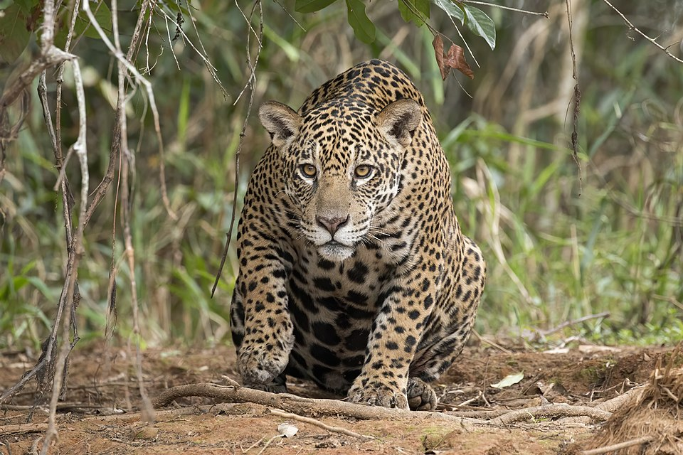

Un felino con el apodo de "tigre de america" por el hecho de ser el mas grande de este continente. Su aspecto general es tosco y macizo; un jaguar adulto puede medir entre 1.12 y 1.85 m de largo, sin incluir la cola, la cual oscila entre 45 y 75 cm de longitud, y alcanza 60 cm a la altura de la cruz.

Cuenta con la mordida más fuerte de todos los felinos y gran mordida entre todos los animales en relacion al tamaño de su boca, con ella logra cazar caimanes, cocodrilos jovenes, ciervos, y otros animales de gran tamaño.
